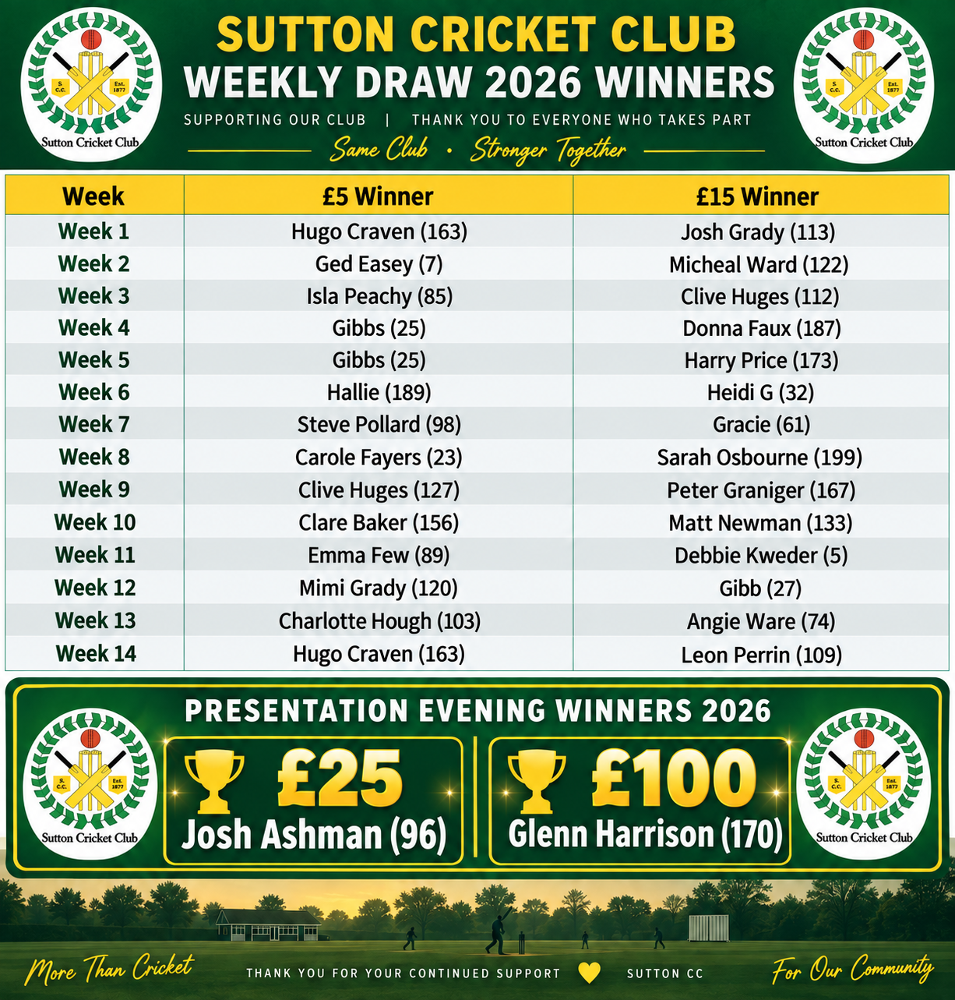

Support Sutton CC
Weekly Draw
The 2026 Weekly Draw has now finished. Thank you to everyone who entered and helped support Sutton Cricket Club throughout the season.
The Weekly Draw will return for the 2027 season. Entry details will be published here when the new draw opens.
Weekly prizes
£15First number drawn
£5Second number drawn
Guaranteed minimum prizes for the first 14 weeks.
2026 Winners
Weekly Draw 2026

Presentation Evening
The big final draw
The final weekly draw of the 2026 season took place at the Sutton CC Presentation Evening, with increased guaranteed minimum prizes.
£25First number drawn
£100Second number drawn
How it works
Rules of the Weekly Draw
Every entry helps raise funds for Sutton Cricket Club.
- £5 must be paid in advance for each number.
- For the first 14 weeks, the guaranteed minimum prizes are £15 for the first number drawn and £5 for the second number drawn.
- At the final weekly draw at the SCC Presentation Evening, the guaranteed minimum prizes are £25 for the first number drawn and £100 for the second number drawn.
- Ticket numbers are allocated to each member, remain the same throughout, and are non-transferable.
- Winning tickets are re-entered into the draw each week.
- All proceeds go to SCC and are used in line with the Club’s Constitution.
- Prize money stated is a guaranteed minimum and may be increased at the organiser’s discretion depending on sales.
ECDC Registration number15/00525/LOTT
2027 season
The Weekly Draw will be back.
Thank you for supporting Sutton Cricket Club in 2026. Details and entry for the 2027 Weekly Draw will be published here before the new season.